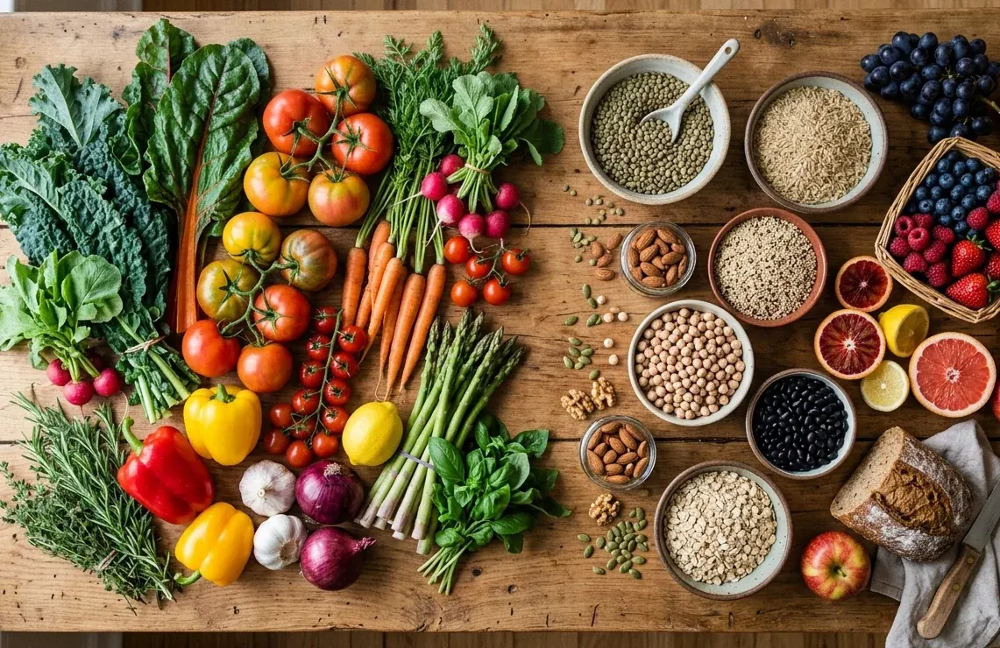

Cardiólogo en Elche · Clínica Elche Salud
Evidencia científica · Aplicación práctica · Recomendaciones del cardiólogo

La hipertensión arterial es el factor de riesgo de mayor impacto individual sobre el riesgo y la enfermedad cardiovascular en todo el mundo. Su presencia y mal control se asocian al desarrollo de enfermedad coronaria y cerebrovascular: infarto, angina, ictus… y también de insuficiencia cardíaca, deterioro renal o cerebral, entre otros.
Además de los fármacos (cuando son necesarios), los hábitos resultan fundamentales para su prevención y control: unos buenos hábitos pueden reducir o eliminar la necesidad de tratamientos. Así lo recogen las recomendaciones de las principales sociedades científicas.[1,2]
Si quieres ampliar información sobre el manejo integral de la hipertensión arterial, puedes consultar nuestra página sobre hipertensión arterial.
La dieta DASH: Dietary Approaches to Stop Hypertension se encuentra entre los patrones dietéticos más útiles y recomendados para este objetivo (junto con la Dieta Mediterránea). Es reconocida en guías clínicas internacionales como recomendación de primera línea.[1,2]
Fue diseñada en los años 90 por el NHLBI (Instituto Nacional del Corazón, los Pulmones y la Sangre) con un objetivo específico: reducir la presión arterial. Se plantea como un patrón práctico y accesible, basado en alimentos comunes y lejos de productos especializados. Inicialmente demostró su efectividad en dos grandes ensayos clínicos:
Comparó este patrón frente a la dieta americana habitual y a una dieta enriquecida en frutas y verduras. En pacientes hipertensos logró reducciones promedio de 11 mmHg sistólica y 6 mmHg diastólica.[3]
Demostró que el beneficio era mayor a menor ingesta de sodio: los pacientes con 1500 mg/día lograron la mayor reducción de presión arterial, tanto sistólica como diastólica.[4]
Grandes revisiones sistemáticas y metaanálisis posteriores reafirman los resultados: la buena adherencia a DASH reduce las cifras de presión arterial de forma modesta pero clínicamente relevante. El beneficio parece mayor en pacientes jóvenes, con cifras más elevadas, con obesidad y cuando se combina con restricción de sodio.[5,6]
Trabajos recientes también refuerzan el papel de DASH en la prevención de la hipertensión en personas sanas y extienden sus beneficios a otros parámetros metabólicos, ampliando su efecto a una mejora del riesgo cardiovascular global.[7,8,9]
Un patrón basado en productos naturales y accesibles. De manera general, recomienda:
Además propone reducir el sodio por debajo de 1500 mg/día y aumentar el aporte de potasio, calcio y magnesio.
En la web oficial del NHLBI se pueden encontrar recursos adicionales, incluyendo distribución por nutrientes para diferentes ingestas calóricas y recetas basadas en estos principios.[10,11]
Aunque equilibrado y seguro, el patrón DASH es objeto de algunas críticas bien fundadas:
En la práctica, lograr una baja ingesta de sodio en entornos con abundancia de alimentos procesados es un reto real. Y en países mediterráneos, la Dieta Mediterránea suele estar más arraigada culturalmente, aunque comparta muchos principios con DASH.
La guía sobre manejo de la presión arterial elevada reconoce la dieta DASH, junto con la Mediterránea, como una de las estrategias más respaldadas e incluye la restricción de sodio como intervención no farmacológica de primera línea.[2]
Recogen explícitamente el seguimiento de la dieta DASH y la restricción de sodio a menos de 1500 mg/día como pilares fundamentales en el control de la hipertensión arterial.[1]
El último informe anual sobre las mejores dietas reconoció la dieta DASH como la mejor dieta para la salud cardiovascular y para la hipertensión, destacando además su facilidad de adherencia. Quedó en segundo lugar como mejor dieta global, por detrás de la Mediterránea.[12]
Digamos que "la tenemos en cuenta". La alimentación debe individualizarse y adaptarse a las necesidades, preferencias y posibilidades de cada persona. No obstante, patrones como DASH ofrecen recomendaciones sólidas y constituyen una aproximación práctica y segura para gran parte de la población.
A su favor: es el patrón con mayor respaldo científico en el control de la presión arterial, con reducciones modestas pero clínicamente relevantes, y un papel en la prevención de la hipertensión en población sana. Parece tener beneficios sobre otros parámetros metabólicos y el riesgo cardiovascular global.
En su contra: la adherencia a largo plazo es un reto, su efecto no es comparable al de los fármacos y su impacto directo en la reducción de eventos cardiovasculares no ha alcanzado la solidez demostrada por la Dieta Mediterránea.
Si tengo que posicionarme, la Dieta Mediterránea me parece la opción más ventajosa en nuestro medio: comparte los fundamentos de DASH, cuenta con mayor respaldo en prevención cardiovascular y resulta más fácil de adoptar en nuestro entorno.
Recuerda: la mejor dieta es la que sí se sigue.
Resumen visual de los principios y aplicación práctica del patrón DASH para el control de la hipertensión arterial.
Consulta cardiológica en Elche con valoración personalizada: tratamiento, hábitos y orientación nutricional adaptada a tu caso.
La apnea obstructiva del sueño como factor de riesgo cardiovascular: mecanismos, consecuencias y tratamiento.
Leer artículo → LongevidadAnálisis del patrón japonés tradicional, su evidencia en longevidad y qué podemos aprender en nuestro entorno.
Leer artículo → Motivo de consultaCómo medir correctamente la tensión en casa, valores normales, hábitos y tratamiento.
Ver más →